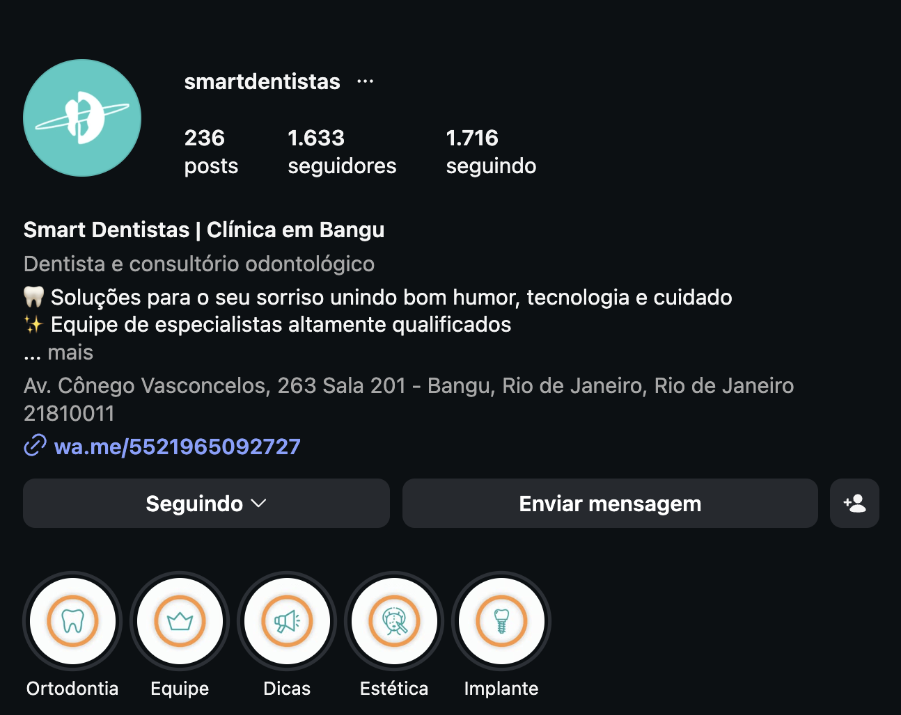
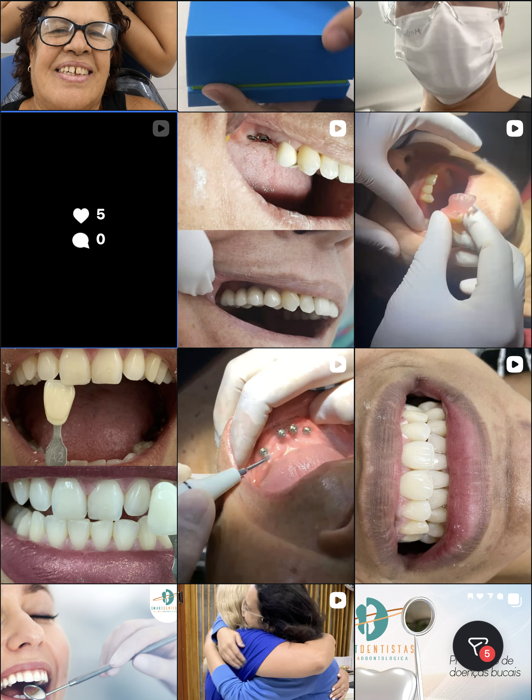
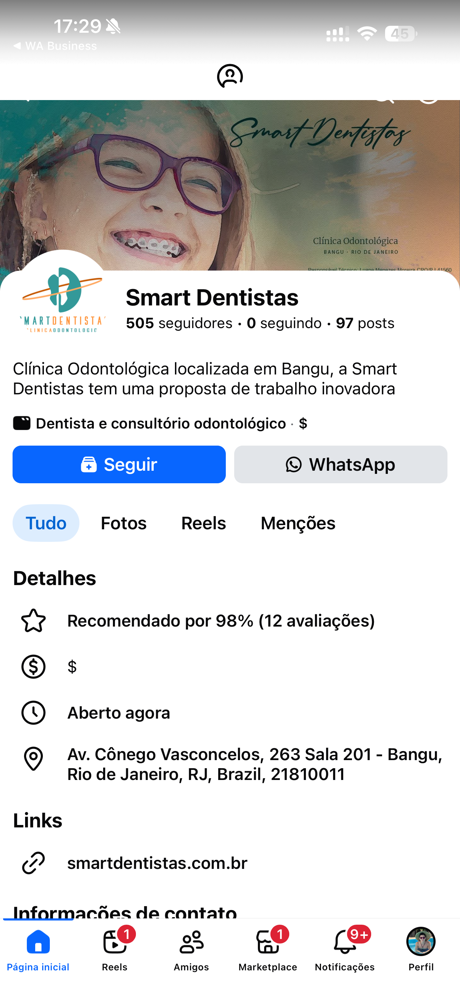
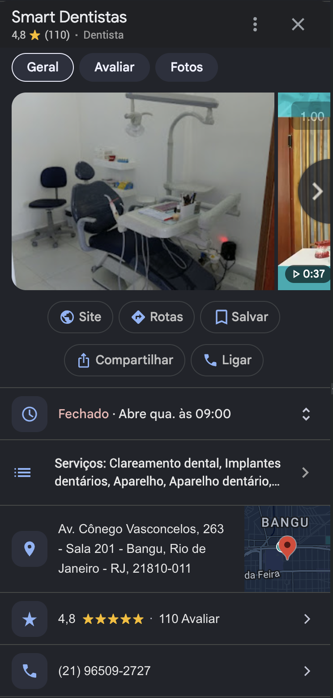

Dra. Luane · Diagnóstico inicial da presença digital
Junho · 2026 · Bangu / RJ
Quem é a Smart Dentistas
O contexto antes do diagnóstico
Um retrato rápido do negócio, do atendimento e das metas, base pra tudo que vem a seguir.
01 · Negócio✓
Implantes & Reabilitação
Foco: Implantes · Reabilitação Oral · Próteses fixas e móveis. Ticket de R$3.000 a R$15.000.
Maturidade: Clínica há 10 anos · 15 anos de experiência clínica. Canais atuais: indicação, Google Meu Negócio e orgânico.
02 · Atendimento comercial✓
Secretária — Thalita
Comparecimento de 80% (8 de cada 10 que agendam). Recontato ≥ 3x em 30 dias.
Gap: social selling ainda não é praticado, oportunidade direta de receita.
03 · Público & posicionamento✓
Bangu/RJ + região
Atende Bangu, Realengo, Campo Grande, Taquara e região. Paciente ideal: homens e mulheres 40-50, recém-separados, renda ≥ R$10k.
Posicionamento: preço intermediário. Diferenciais: localização de fácil acesso e 15 anos de experiência.
04 · Metas & histórico✓
Previsibilidade & escala
Faturamento atual em crescimento. Meta 6 meses: receita previsível e escalar o faturamento, com 10-20 pacientes novos/mês.
Histórico: já anunciou no Meta Ads com investimento baixo e leads sem qualidade. Tem lista de +100 pacientes para remarketing.
Diagnóstico 360 · Panorama
Como estão seus canais hoje
Avaliamos cada ponto de contato digital. Veja onde a Smart Dentistas está forte e onde está deixando paciente na mesa.
10 anos
de clínica
10–20
pacientes/mês · meta
R$3–15k
Ticket médio
InstagramAtenção
@smartdentistas · 1.634 seguidores e 236 posts. Bio com CTA e WhatsApp direto, 5 destaques organizados. Engajamento baixo (~5-8 curtidas por post).
FacebookBom
Página Comercial estruturada (505 seguidores), destrava o Meta Ads. Capa, logo, botão de WhatsApp e endereço iguais ao Google. Falta confirmar pixel e vínculo com o Instagram.
Google Meu NegócioBom
Perfil forte: 4,8 ★ com 110 avaliações. Serviços, horário, telefone, endereço e fotos configurados. É o melhor canal hoje.
SiteAtenção
smartdentistas.com.br fora do ar. Domínio existe e está vinculado ao Google, mas sem conteúdo, sem captura de leads próprios nem retargeting.
Materiais (criativos)Crítico
Volume alto, qualidade baixa. ~17 casos documentados, mas muitas fotos na cadeira / com afastador, em formato bruto. Falta antes/depois com sorriso natural e padronização.
Instagram · Estrutura do perfil
Perfil tem base, mas perde na conversão
@smartdentistas
0
Seguidores
0
Posts
~5-8
Curtidas/post

O perfil hoje
▲ O que está bom
✓Nome com cidade ("Clínica em Bangu"), ajuda em busca local
✓Bio clara com proposta + CTA ("Agende sua avaliação")
✓Link da bio direto pro WhatsApp (wa.me, sem fricção)
✓5 destaques por procedimento com capas de marca
▼ Pontos de atenção
!Seguindo (1.716) maior que seguidores (1.634), desfavorável
!Base pequena (1.634) frente à meta de crescimento
!Bio destaca "bom humor/tecnologia", não o carro-chefe
!Sem prova social no perfil (nº de casos, +X reabilitações)
!Categoria genérica (Dentista), sem especialidade-chave
!Perfil não verificado (sem selo)
Instagram · O feed
O que o paciente vê ao abrir o perfil
Alta
Frequência
~5-8
Curtidas/post
Baixo
Engajamento

O feed hoje
▲ O que está bom
✓Casos clínicos e procedimentos no feed (implantes, próteses)
✓Série educativa com template de marca (Prevenção, Clareamento)
✓Posts de conexão e bastidores geram empatia
✓Bom volume de Reels, favorece alcance
▼ Pontos de atenção
!Engajamento muito baixo, ~5-8 curtidas para 1.634 seguidores
!Grid sem padronização, vídeo clínico cru misturado com template
!Antes/depois com afastador e close de boca, sem sorriso natural
!Muito conteúdo clínico cru, pouco atrativo pro leigo
!Poucos CTAs de conversão nas legendas/posts
Facebook · Página Comercial
A base que destrava o Meta Ads
0
Seguidores
0
Avaliações
OK
Página Comercial

A página hoje
▲ O que está bom
✓Página Comercial estruturada (505 seguidores), destrava o Meta Ads
✓Capa e foto com branding + botão de WhatsApp ativo
✓Posts recentes · horário e endereço iguais ao Google
▼ Pontos de atenção
!Confirmar instalação do Pixel da Meta para rastrear conversões
!Confirmar vínculo Página ↔ Instagram no Meta Business Suite
!Só 12 avaliações, volume de prova social baixo
!Base menor que o Instagram (505 vs 1.634 seguidores)
!Conteúdo muito replicado do Instagram, pouca estratégia própria
!Categoria/descrição podem destacar mais implantes e reabilitação
Google Meu Negócio
Seu ativo mais forte
4,8★
Nota
0
Avaliações
Top
Reputação

O perfil no Google hoje
▲ O que está bom
✓Nota 4,8 com 110 avaliações, reputação consolidada
✓Serviços configurados
✓Horário de funcionamento correto
✓Telefone configurado
✓Endereço configurado e igual aos outros canais
✓Fotos da clínica adicionadas
✓Vídeo configurado no perfil
▼ Pontos de atenção
!Categoria genérica (Dentista), sem especialidade-chave
!Site vinculado está fora do ar
!Espaço pra adicionar fotos de procedimentos (antes/depois)
Materiais · Matéria-prima dos criativos
Volume alto, qualidade baixa
Tem caso de sobra. O problema é que o material bruto ainda não vende o resultado, é o ponto mais crítico do diagnóstico.
Material em curadoria Print do criativo final ainda não escolhido
✓Depoimento em vídeo já gravado (caso Fátima), prova social pronta
✓Variedade do carro-chefe (implantes e reabilitação) registrada
✓Casos separados por procedimento no Drive (Lentes, Orto, Implantes)
▼ Pontos de atenção
!Qualidade baixa e sem padrão visual entre os casos
!Muitas fotos com paciente na cadeira / afastador, não vendem o resultado
!Falta antes/depois com sorriso natural e enquadramento de retrato
!Formatos brutos (HEIC/MOV) sem tratamento, falta edição p/ Reels e confirmar autorização de imagem
Benchmark · Você vs. concorrentes
Como você aparece perto da concorrência
Os dois concorrentes de referência ainda estão em análise. A estrutura abaixo será preenchida assim que os perfis forem auditados.
Critério
Smart Dentistas
@mofato.odontoeface
@denteshow_
Seguidores
1.634
Análise em andamento
Análise em andamento
Posts
236
Análise em andamento
Análise em andamento
Frequência
Alta
Análise em andamento
Análise em andamento
Engajamento
~5-8/post
Análise em andamento
Análise em andamento
Google
4,8 (110)
Análise em andamento
Análise em andamento
Identidade visual
Inconsist.
Análise em andamento
Análise em andamento
A Smart Dentistas chega ao benchmark com Google forte (4,8 / 110 avaliações) e bom volume de conteúdo. O gargalo conhecido é engajamento e padronização visual.
→ Comparativo completo com @mofato.odontoeface e @denteshow_ entra na próxima rodada de auditoria.
Personas · Pra quem a gente fala
Quem a Smart Dentistas quer na cadeira
Duas frentes derivadas do paciente ideal e do carro-chefe. Toda comunicação e verba se ancoram nelas.
Persona A · Reabilitação / Implantes
O paciente do carro-chefe
Homens e mulheres de 40 a 50 anos, muitos recém-separados, com renda a partir de R$10k. Buscam recuperar função e autoestima, e têm verba pra um tratamento de R$3k a R$15k.
O que precisa
Recuperar dentes perdidos com implante ou protocolo
Voltar a mastigar e sorrir sem se preocupar
Segurança técnica de quem tem 15 anos de experiência
Dores
Vergonha de sorrir / falar em público
Medo de procedimento longo, caro ou doloroso
Desconfiança de clínica que nunca viu por dentro
O que busca na decisão
Antes/depois reais com sorriso natural
Prova social: nº de casos e depoimentos
Atendimento rápido e acolhedor no primeiro contato
Persona B · Estética / Próteses
O paciente da estética do sorriso
Homens e mulheres da mesma faixa (40-50, renda ≥ R$10k) e também adultos mais jovens da região, focados em aparência. Querem um sorriso mais bonito e harmônico via próteses, lentes e estética.
O que precisa
Melhorar a aparência do sorriso (cor, forma, alinhamento)
Solução estética que caiba no orçamento intermediário
Resultado natural, não artificial
Dores
Insegurança com a aparência em fotos / redes
Receio de ficar com dente "falso" ou exagerado
Não saber quanto custa nem por onde começar
O que busca na decisão
Portfólio visual de qualidade (estética vende no olho)
Identidade de marca que transmita cuidado e bom gosto
Facilidade de contato e agendamento
Estratégia & verba · Proposta inicial
Como distribuir o investimento
Esta é uma proposta inicial de distribuição da verba por objetivo. Os percentuais são o ponto de partida, o valor em reais é definido junto com a clínica.
100%
proposta inicial
Toque em cada frente para ver os objetivos de campanha ↓
Vendas
Gerar agendamentos do carro-chefe
60%
maior fatia
▾
Possíveis objetivos no Meta Ads
Engajamento (conversas no WhatsApp)
Vendas / formulário nativo
Remarketing pros +100 pacientes da base
Foco em implantes e reabilitação, anunciando para um público semelhante à lista de pacientes.
Descoberta
Aumentar alcance na região
25%
topo de funil
▾
Possíveis objetivos no Meta Ads
Visitas ao perfil
VideoView (alcance)
Impulsionar publicações do Instagram
Foco em alcançar novos pacientes de Bangu, Realengo, Campo Grande e Taquara com conteúdo de autoridade.
Relacionamento
Nutrir e reativar a base
15%
público quente
▾
Campanha de engajamento · público quente
Seguidores
Quem curtiu ou comentou
Quem engajou com o perfil
Viu seu vídeo até 50–70%
Plano de ação
Os primeiros passos pra virar o jogo
0 de 0 concluídos0%
UrgenteO quanto antes
Curar e padronizar os materiais (antes/depois com sorriso natural, fora afastador e cadeira)
Confirmar instalação do Pixel da Meta para rastrear conversões
Reativar o site (smartdentistas.com.br está fora do ar)
Editar e tratar formatos brutos (HEIC/MOV) + confirmar autorização de imagem
ImportantePróximas semanas
Destacar o carro-chefe (implantes/reabilitação) na bio do Instagram
Adicionar prova social no perfil (nº de casos, +X reabilitações)
Confirmar vínculo Página ↔ Instagram no Meta Business Suite
Ajustar categoria do Google e do Instagram para a especialidade-chave
ContínuoEvolução constante
Subir a frequência e a qualidade do feed (padronizar grid e capas de Reels)
Praticar social selling com rotina diária
Recontato 3x dos +100 pacientes da lista de remarketing
Adicionar fotos de procedimentos e responder avaliações no Google
O sonho
Ser a clínica de referência em reabilitação oral de Bangu e região
Meta clara: tornar o faturamento previsível e, no próximo degrau, escalá-lo, somando 10 a 20 pacientes novos por mês do carro-chefe.
→ Presença sólida, materiais que vendem o resultado e um comercial que não deixa lead esfriar.
Este é um diagnóstico inicial. A partir daqui, cada frente vira plano de execução conduzido pela B2Donto.